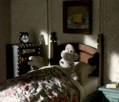
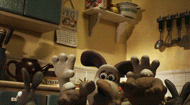

Join me in the journey through Wallace and Gromit's journey's and inventions!
These two films are made entirely of clay! Please enjoy!
- Breakfast
- Were-Rabbit
- Wrong Trousers
- Random
- Summries and Links
Shall We Start Off with Breakfast?
 |
||
 |
Content 3
 |
The Curse of the Were-Rabbit is how Wallace and Gromit set out to discover the mystery behind the garden sabotage that pagues their village and threatens the annual giant vegetable growing contest.
Rotten Tomatoes IMDb
The Wrong Trousers is a short film about Wallace being used by a criminal penguin in a robbery involving mechanical trousers.
Rotten Tomatoes IMDb